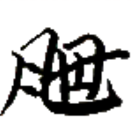
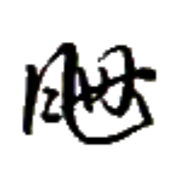
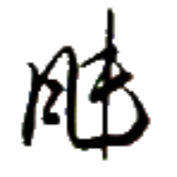
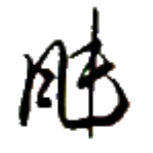

新星善来 ルー⤴ペゥㇳ⤴カイㇳ·ザㇰ⤴ 【新星善来】
[間投詞] あけましておめでとう
[間投詞] お誕生日おめでとう

ショㇳ→ 【季】
[名詞] 季節
[名詞] (セッカイクの)季
[名詞] (セッカイクの)季
終季 タ·ショㇳ→ 【終季】
[動詞] (セッカイクで) 季【季】を終わらせる
[間投詞] (セッカイクで) 季【季】を終わらせる
骨門 ホウ⤴ギアウ→ 【骨門】
[名詞] ホーギャウ、オキヤウ（アイル共和国の都市名）
都市名としては 豊門【豊門】と表記するのが普通だが、玩具メーカー 骨門遊刀【骨門遊刀】のように、都市名においても 骨門【骨門】と表記することがある。なお、郡名の場合は基本的に 骨門【骨門】と表記する。
骨門大集 ホウ⤴ギアウ→マー→ダㇳ⤴ 【骨門大集】
[名詞] シェプ・オキヤウ郡（アイル共和国の郡名）


 
